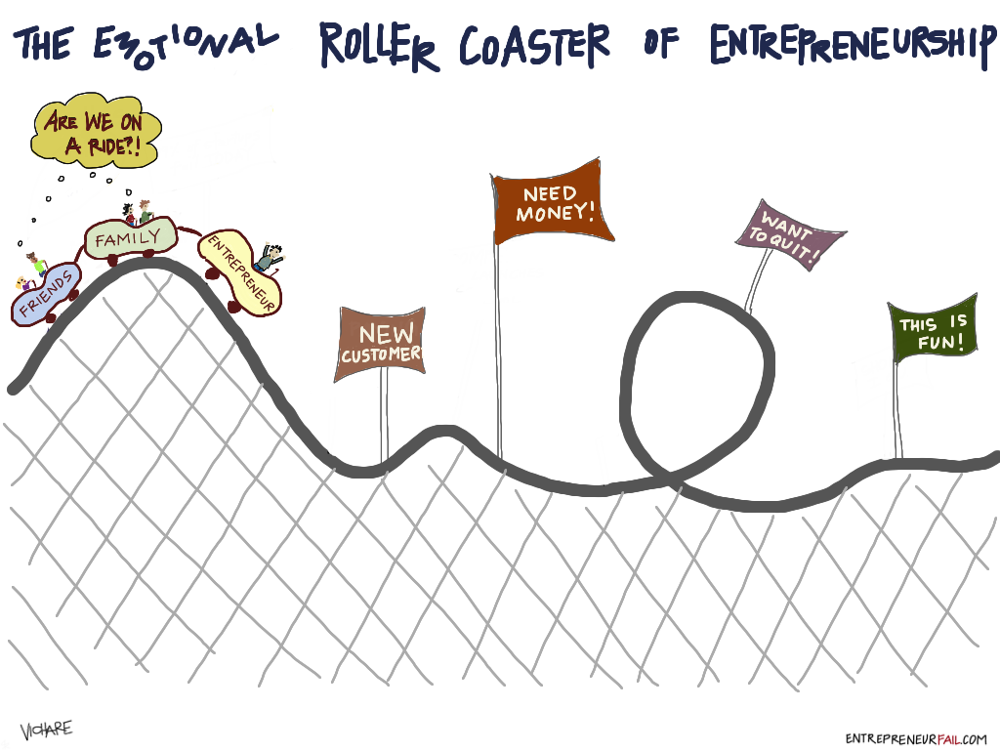

I want to start a car modification shop. What would be your advice?
1. Start with something small that you can afford initially like stickers and (get someone who is good at spray drawing. Give this service to your friends at lower rates than standard car modifiers in your city (if there are any)
2. Build a website after you have serviced few customers (say 10) and put up your work in your website to display. And do advertising on Facebook, LinkedIn and other social media sites of your company.
3. Always do more than what customers want. You should satisfy your customers with your modifications, no matter what.
4. Repeat 3. Wait for some time. Success doesn't come overnight.
I have a start-up idea but I don't know how to get started. Are there any start-up accelerators and incubator in India which can help initially?
Yes definitely. There are many start-up incubators in India.
Start with Start-up Centre, Chennai also google search for Hyderabad start-up incubators....by the time you do these you will have a lot more idea.
Apart from big players a lot of start-ups in India are developing to help other start-ups, read about them in www.yourstory.in. They will help you!
How much pre-planning must be done before having a start-up?
Infinite.
You may plan as long as you want and as less as you want. I advise you not to use the word start-up unless you start to do your work. The real thing starts when you start doing things viz. Market Analysis, Customers Feedbacks, Initial prototype building, and selling the product. As for your case, if you have more ideas see which one qualifies all of the following criteria:
The larger market segment: Which among your ideas solve the problem of a large number of people when you first roll out your beta version.
Look at how much time, cost, manpower you have: how much time are you willing to put into, how much money are you willing to put into, how many are in your team. According to this see which idea you can work on that gives you the beta product the fastest. Do you want to work long term or short term?
Among which of your ideas there are already big companies that provide a similar service, rule them out unless 100% confident
I want to start an electronics manufacturing company. What is some guidance for this?
I got the following points by talking to an Electronics Engineering 9 pointer with vast knowledge of practical applications in EC. He is my close friend.
First.
First be sure about the kind of industry you want to start.
Is it?
Electronics Equipment
Any App
Provide Service
What will take time? After that is fixed if you want to go for electronics manufacturing, the basic requirement is fundamentals, you need to be strong in fundamentals. You should have a thorough knowledge about.
Fundamentals.
Controllers.
Any Spice Tool.
Arduino.
Microcontrollers.
Sensors.
Analogue circuits.
This will take a lot of time to study.
What kind of team you need? You need the following in your team
A circuit designer.
A Coder.
A component assembler.
You need to build a great team to do any task as a company or any organization. You need a team that is smarter than you, sincere and hardworking.
Capital you need: 10k Indian Rupees.

I have a start-up idea but I don't know how to get started. Are there any start-up accelerators and incubator in India which can help initially?
Yes definitely. There are many start-up incubators in India.
Start with Start-up Centre, Chennai also google search for Hyderabad start-up incubators....by the time you do these you will have a lot more idea.
Apart from big players a lot of start-ups in India are developing to help other start-ups, read about them in www.yourstory.in. They will help you!
How do I check the feasibility of my start-up idea?
Note: A specific domain question would have been helpful to answer.
The feasibility of a start-up cannot be measured in practical approach. It’s because there can be a product/ service which a big company is already providing and you may come up with something better.
If you really want to check the feasibility of the solution you are providing the best source would be mentors, industrial people or entrepreneurs who are an expert in the domain you want validation in.
Where can I find people to join my team and help me build businesses/start-ups?
It's a simple problem with a simple solution. Try posting your ideas in
Various developer groups in Facebook
Your twitter accounts
On Quora (and yes mention your idea)
Google+ groups (they are a great place to meet geeks)
LinkedIn profile.
I’m sure you will definitely get more than 5 people if your idea is valid.
What is the next big start-up for 2015-2016?
Without a second thought its IoT (Internet of Things)- connecting your smartphones with everything else.
Internet of Things is the communication of every micro controller powered product to every other micro controller powered product. That is to say, your keys can be searched from your phone, you can program when to start and when to close your microwave, AC, TV. There are many applications like such. 'IoT involving smartphones' are definitely a '2016 onwards thing'.
When you start a software development start-up, how do you get your first clients?
I am working on the same front. i.e. trying to get beginning customers. The very first customer is that friend of yours who is very interested in your idea but doesn't want to work with you. He/she will definitely use your product to prove his/her concern for your work besides actually getting benefited with the product/service you have to offer.
Going to the point of getting initial customers the strategy I am using is Survey Forms. And promote your idea to customers before actually building the product. If you are going to build a product anyway, roar louder than thunder and tell the services you want to provide and get some initial sign ups through a landing page or subscription forms.
For software development start-up, like the one my friend is handling, the experience I have got is; the best thing is to approach groups like shops, hotel owners, business owners, developers and assure them to build the product they need. Be sure to take partial advanced payment so that the whole thing actually gets some motivation and for other obvious reasons. You can offer some of discounts to them in exchange of forwarding your company names for the connections they have.
These are the initial steps.
Do I need a good college degree to open a successful start-up that is funded?
NO..!!
How do develop buyer persona for start-up company?
Since you mentioned a start-up company: get your customers first: It is the first step that may lead for your need to develop a buyer persona. You need to have the buyers first.
After you have roughly 300+ customers for your product / service sell your products: A fairly good number of sales can provide you the leverage to worry about complicated issues of building a buyer persona. Buyer persona is a very simple concept. It is tracking, tracing and judging the data about your customers. The goal of any buyer persona would be knowing what customers buy in the present and judging accordingly what they would love to buy in the future. This can be done in a number of ways,
The best product that is being sold by your start-up.
The most viewed product (not necessarily bought).
What customers are expecting in the future. You can get this through feedbacks, polls, discussions etc
Tracking a count of these sales should be very simple. You can build a simple automatic system that operates on the basis of count of purchase by a specific customer. Suggest similar products to individual according to the obtained data. The complication of such a system will increase as you increase the number of criteria you wish to evaluate. e.g. sales number + demand + views to unpurchased items + clicks + .... That part is tally depended on your business model.
How do I prepare myself to become a successful start-up CEO?
Follow the following things in any order and you can be a successful CEO of your company.
Drive your team to develop and innovate.
Be the centre of attraction to potential customers. Create such personality.
Be happy, keep good health, and do good things.
Make your product, your life aim.
Follow the above steps and while doing so you come across everything you ever hoped and you never hoped to experience in life. Main thing is you have to go through all the 'hell' phases of life to stand at the top managing people below you. If you want a smooth ride to the CEO post and hope to enjoy it without criticism, without failures, without broken relationships, stop dreaming such thing, otherwise you are just fine. It comes at a cost!
Is the start-up bubble in India going to burst soon? Is it still a wise idea to shift from a mainstream MNC to a start-up?
Start-up Bubble.
If there is something called as a start-up bubble regardless of whether or not the bubble of start-up is going to burst, having your own start-up is always a bliss. There is this whole circle of knowledge, talent building, experience gaining and financial freedom that you get out of your own company or business.
MNCs vs Start-ups
Are you unhappy with the work at MNC? Is your boss too bossy? Are you not getting paid on time? Is your pay insufficient to live? If the answers are mostly Yes! then it is advisable you shift to a start-up and build a business out of it (meaning, make money out of it). Shifting from MNC to Start-up just because of a bubble-burst hypothesis is not advisable. Think for yourself, is it not common sense?
The start-up attraction
The start-ups are going through a phase of attraction and catching the attention. Tags like 'do your own thing', 'do what you love' etc are widely found everywhere in the internet. But beware! It is all but true. If you really want to follow your passion and want to build what you love to build, you have to be ready for consequences such as loss and failure also. So, don’t get attracted with the whole Start-up Funda only because of its attractive parts. Research well before taking a decision.
What are the opportunities to become a successful entrepreneur after B. Tech?
The above person cannot be an entrepreneur. Unless the intention to take the job is to save for your start-up. Entrepreneurship and Job are two different things but aiming to achieve similar goals.
Sorry to say, but after B Tech you cannot do anything. While you are in B. Tech you need to develop skills, build your network, and save money. If you have an excuse in your pocket, "It won't be possible now", then it will never be possible. Even if you have not bothered to think about it you will learn a lot of skills in BTech: Programming Skills, Presentation Skills, Communication Skills, HR Skills (Handling a bunch of your friends, teachers) etc.
When you have skills, you can reach anywhere my friend.
But where? This where is the most difficult task for many populations today. It is because you did not invest much time thinking where you actually want to go. Invest some time to do that thinking now. And set up your priority. What is your top most priority (only 1) from the below list:
Extra Income
Financial Freedom
Self-Business
More Time
Helping others
Leaving a Legacy.
Find this priority and start working towards how to achieve it. You have to create opportunities. There can be infinite opportunities when you create them yourself.
What are some potential low-cost businesses that can be started and operated by a teenager? I have $1000 to work with. I am an Eagle Scout, and speak proficiently in Spanish. Some ideas are vending machines, gumball machines, or lawn care service.
It really depends on what you want to achieve by starting a start-up. Since you said little investment it is clear you want to invest little and achieve more. That need not be a start-up all the time. I suggest you learn marketing. Especially multi-level marketing (MLM). If you are in college this could be the best thing you could do to gain money, power and returns at a minimum investment.
Note: If I did not address you clearly please add question details what is it you actually want out of a start-up?
What is the biggest challenge an entrepreneur faces?
It is change of "core values". This is the toughest and the only difficulty a person faces when an entrepreneurial spirit engulfs his/her body. Change in core values meaning,
1. Change in friends
2. Change in dream size
3. Change in ambition
4. Change in personality & tone
5. Change in perception
6. Change in sight.
Very important phases a self-made person goes through early in his/her endeavour. Totally worth it.
I have an idea. It is at the conceptual level at the moment. How do I develop that idea? Where do I start?
You will get demotivated very soon. It is because you have the idea in your mind. Bring it in your hand first. Draw, scribble, plan, paint, and keep it recorded somewhere first.
To develop the idea you need patience. After taking a note of your idea, best you discuss it with your friends, your family, and your teachers. This is the best starting effort you can put to develop any idea. Get feedback on your idea and decide on a better solution. Don't worry that someone will copy your idea. That is immature thinking. No one can copy someone's idea. Especially when it is not even been designed 100%. Makes sense?
After validating your ideas with your close ones you have to validate your idea with some mentors. Go to foundersdating.com, linkedin.com, Facebook geek pages, google+ geek pages and post your idea and solution and get it verified.
By the time you reach this stage you will automatically learn all the tools and services you may use, through the contacts you made to go further up the hill. It will get difficult, you will tire, you will think to quit, people who couldn't climb the hill will criticize. What matters is what decision you take and if you follow it or not.
Is producing smartphones, a right start-up in present trend?
Yes....if you have lots of money and a large network.
No....if you are aiming to start small and make it big.
How do you check whether your start-up idea for an accessory has not already been made?
Google. If a product is made but is not in google, you making it would be no harm.
Learn how to google properly. Poor searching skill won't help.
Where does an individual get funding for a new start-up?
Initially through relatives.
If not, then from contacts.
For good ideas, next would be Angel Investors.
General public is the last option.
In a start-up, who actually drafts the founder’s agreement, the agreed division of the equity pie? Also, what other such procedures are mandatory for a start-up, aside from the regular incorporation procedure?
In a regular incorporation procedure itself they will tell you what other procedures to follow. Trust me, that's going to be hectic.
Agreements are done by people who are the boss. Who have come up with the idea. One who can speak up. One who stands for the company in all situations. It is mostly done through agreement basis.
Should I take an offer from a funded start-up or continue to work on my 1-month old start-up with 10 customers?
If it's self-sustaining, don't take funding for some while. Better investors will come if you excel. Why would you waste someone's money if you don't excel?
Yes, if there is lack of money you know what to do. If more money is bringing more work, don't do it right now.
I want to start-up a company, I just completed my graduation is it correct time for me to start?
Yes. Now.
You said 'help me'. I'm giving you help. If you are already working on a start-up you pretty well know what's it like. Plans, Strategies, Market, Hot topics in the industry, Clients, Expectations, Performance and Margins. If you haven't got time to know about these things, next time you are in the company just enquire. Anyone who is seriously doing a start-up will be 100% frank in disclosing any plans they have. Next, Execute 1 plan. You are not hoping to implement your many ideas all at, once right? Implement the one that doesn't involve investors, and where you have good profit margin.
How much money I would need to start a online recharging app?
Very minimal.
To start anything that is online you will need the cost for:
domain name registration and
domain hosting only.
You need to pay only for the bandwidth and the name registration as is mentioned in the above points. Additionally, if a charge needs to be paid for using the service of recharging that too must be paid. To my knowledge the API is easily available and it's free.
There is no external charges that will be applicable. You need to connect the service providers of recharge and you need the customers. That's all.
That would be around $20.
If I want to become an entrepreneur, where do I start?
Congratulations on taking the right step.
If you really want to become an entrepreneur you should learn some good things from Quora.
It's good to "want" to become entrepreneur in the beginning but you have to start leaning towards "need" more in the future. What I mean is Why I want to be an entrepreneur? Answer should come naturally as want to help people, you want to help businesses grow, you want to make things cheaper, faster and simpler. Ref: https://worldbusinessesblog.word...
Where to start; find your interest.
When you were 10 what you used to dream about. At 17 doing what activity you are the happiest. These things are the things you are interested in. List different interests on a sheet of paper.
Prioritise your interests. Number them 1,2,3... same like my answer.
See various companies, products, services that already exists and learn how they work. Learn the success stories. Learn the failure stories. What events happened in the world when a particular idea succeeded or failed. See all dependencies. Dependencies mean things that are related to a thing.
Propose improvements, build a prototype, meet people in different conferences, meet ups, seminars where entrepreneurs meet.
Following these steps will guide you for further steps.
Entrepreneurship is a journey, believe in it. Walk the path. Lead by example.
I am starting my start-up and how do I came to know how much initial funding should be required?
This is a big question. It depends in which sector you are trying to work on. Generally, there are two types of start-up:
Hardware based
Software based
Hardware based companies require initial funding. Software based companies require funding but it is minimal. If you are running a start-up of Ecommerce type and maintaining stock, transport etc. then you need finance.
My best advice to you is:
Do work that doesn't require funding first. Like preparing business model, finding customers, finding co-founders (team).
This is the step to success: Business Model> Prototype> Customers> Paying Customers> Profit> Investors. If you go for investors in the beginning you will fail. Remember: paying customers before investors.
What is the best business to start with 1.5 crores in hand in south India?
I think this question is flawed.
Business is not started by money. Business is started by idea+execution. The growth of idea and your business will depend on your business skills, which is a completely different way of thinking. It takes years to develop a business mindset unless you are from a business background family.
Yes there are possibilities. Let me get back to you when I find the answer to your specific question.
What start-ups in Bengaluru are IoT based?
In Mangalore, we have www.axndx.com, launching our smart plug soon.
Which type of business should I start?
I think you can start the Juice Centre nearby the gym. It is a good business opportunity. Be sure to sell quality juice at an affordable price. Don't think of making a lot of money in the beginning. In the beginning just keep a very thin margin and give very good quality service.
What you need is a mixer, good supplier of fruits and ice, and mostly a refrigerator.
I'm going to start a online gift delivering company as a start-up this includes only colleges so tell me whether I should register this company and should I need to consult the administration of those colleges, if so HOW?
If you are serious for a start-up, these are the steps.
Prepare a Business Model. (2 months)
Build a prototype. (3-6 months)
Get customers first. (1 year+)
Get paying customers second. (1.5 years+)
Maybe investors (2nd or 3rd year)
Your idea is good. You can start off immediately. Don't mix the steps and don't change the order.
I have a good start-up idea in my hometown of Mumbai and potential to make it work. Now what? Where do I start? What should be my next steps? What legal stuff do I need to take care of? What kind of people will I need as partners?
1. Research
Find out what is missing? See these things: pricing, brand, quality. See which already existing competitors provide these 3 criteria on a scale of 10. Focus on the missing area.
Find out your potential customers. Try to give services to the local people who are not already taken some similar services. Your company will have value only when you can add new customers to the market.
Devise your talent scope. See to it perfectly what you can do. Yes there will be things that you cannot do. Based on your team formulate a talent scope for your company. Know exactly what you are capable if. Know exactly what you are not capable of.
Build a social presence. Build a blog, a Facebook page, a Twitter handle and make your start-up globally present in the web. I do branding, you can contact me through, www.iusolve.com. This will take time.
Collect a cash money that will feed you and your team for six months. Doing start-up means nobody will support you in the first six months. Be ready with survival tactics for these first 6 months.
2. Business Model
Build a business model.
3. Get work started
Get customers first. Any customer. Do work for free initially.
Get paid customers. Have a good profit strategy.
4. Expand
Build branches, hire more people, network.
How can I be a moonlight entrepreneur?
Hi (to your hey) and congratulations!!! Many aspire to achieve like you have including me. I'm 22. So here I am your 2 years past.
Earning money requires your idea to be successful and you (and your team) implementing that idea in a repeated manner. This is how money is earned. If you want money, keep going.
I've read a lot of people who joined Google or Facebook or such high-profile companies. They say that they have enough income, and enough fame, and they are solving so called humanity's greatest problems. And they say they don't feel happy.
Some I've read that they started some XYZ company, went through all the troubles, earned money, fame, even earned work. And they say they are not satisfied. They want to go back start something new.
The main point is once an organisation is set, and it starts following rules and many people join, and it expands, people lost interest.
It's the same with you. You don't want to be fixed. You don't want to be in 1 location. You don't want to follow rules 100%.
You want to break things. You want to start something new again. You want to experiment. You want to test your limits. You want to be free.
Period.
(Yes, the answer is over. I hope you got yours.)
I want to start new business related to mechanical engineering can anybody please guide me?
Anybody will guide you. But will you follow? These are my suggestions to you:
Fix your domain. What exactly you want to do inside Mechanical Engineering?
What kind of business/ start-up? Service, Manufacturing, Consulting?
Research the market, see what's missing, see what's in demand?
These steps can be the starting tips for you...
What are the best books for those who want to start business while continuing with the job?
Not BEST, but a MUST READ if it is for the first time you are venturing into doing something new. Handbook of happiness talks about simple things of life and makes you realize that the big and complex things are not as big and complex as they seem.
We (6people) are thinking about starting a company. What are the clauses an agreement we need to sign so that there won't be problem in the future?
The one who works more (creates more results) gets more.
That is the only clause you need to sign. If dividing the company shares is a problem to you, you can see the following factors before giving away the shares:
Who had the idea?
Who manages the company?
Who brings the customers?
Who does the marketing?
Who builds the product?
Divide on the basis of the above-mentioned work. If you have not started to work then agree that you will divide share based on the above-mentioned works. Having shares divided before starting the company is a bad idea.
But you don't get the shares right away. Dividing just means allocating. It doesn't mean one can have 100% ownership of his share. You also need to have one more thing added to the above 5 points. i.e.: Vesting. It means that the above five types of work will determine your share of the company but you can fully redeem it only after 4 years (it's a standard) of working together.
If someone leaves before 1 year of working together, he/she gets nothing. If one leaves after 1 year, he/she gets (1/4) * [ his percentage determined by evaluating 5 criteria], 2 years? (2/4) * [...], 3 years? (3/4) * [...], and thus after 4 years one can fully claim his/her share.
How do I become a famous entrepreneur with small and simple start-up?
Social Service.
To become famous, you need to do a lot of social service. Have a simple business idea and get few clients to buy your product or service. After that you can go forward and build on social service and charity. Involve a lot of people. Preach and teach about giving to society and ultimately you will become famous.
Entrepreneurship is also about social service and helping people but you cannot do it if you do not have some profits and money to fuel your expenses. The point I am trying to make is become self-sustaining. Then go about helping people.
I am thinking about starting my own business. I started writing my business plan, but are there any general tips or advice that you would give to a new entrepreneur?
For me it is divide the final product into many smaller independent units. Then combine them.
I wanted to start an own business with Investment INR. 3,00,000/-Can anyone please give me some business IDEA? Where if we invest, we can grow up?
Go ahead, invest.
Money cannot start a business. To start a business there are following things which are most important:
Business Mindset
A problem to solve
Business Mindset: A business mindset doesn't develop in 1 day or 2. It takes time. People with amazing business mindset fall in either of the two categories:
They are from business family background. They always heard business from childhood at home, they saw their parents talking business over phone all their life. They saw those creepy & dangerous business men dad or mom used to meet. They saw that big pile of money lying around the house. They faced big problems early from childhood.
They failed in a lot of business. They started a business and failed. They learnt the basics and fundamentals if business after failing in a lot if businesses and probably losing a lot of money.
A problem to solve: Your business should solve a problem. It should make life easier. It should help other businesses function easily. Any of these. Without a problem to solve you cannot start a business. If you have a good amount of money you better invest in someone else's business because if you want to do business if your own you need the first element business mindset that takes years to build. It cannot happen overnight. If you are willing to sacrifice time and your effort to build a business mindset that's good also.
Can a not so proficient software professional establish a start-up? What all does it take?
Yes. You can definitely do a start-up. Though being good at it is a completely different topic altogether. You need short term and long-term skills to become successful at it.
Skills learnable in short time
Coding courses are easily available in any MOOCs. Many stuffs online are good and can give you the basic idea
Finding problems to solve. You need to track down what problem you want to solve through your product or service idea.
Finding a great team. Teams are available easily. You can even outsource the works as today there are lots of freelancers.
Skills that take more time to learn
A good coding practices. You need to invest months to learn efficient coding practices to maximise your output by optimising your algorithms and your procedures.
A business senses. You cannot get a business mind in 1 month or 11 months. A business mind needs years to develop. You need to invest so much time to develop towards that direction.
Keeping your teams stick together. When factors like cooperation, trust, loyalty comes, finding and maintaining such team is a big challenge and can be achieved only over a long time.
If you have some cash to dispose and are thinking of spending 1 year or 2 just to start up, a better option will be to acquire an already existing start-up or partner with them.
Can I be an entrepreneur if I can't code?
Yes & No.
Yes, you still can be an entrepreneur because coding is not a must.
No, you cannot be an entrepreneur if that is needed along the way and you are like "no I won't learn to code".
An entrepreneur should be able to change with situations. You have to be very very very flexible.
If your question is, "is coding important to become an entrepreneur?" Then it's a yes. Coding is crucial whether you are an entrepreneur in technical or non-technical field. It's not a must but it's a must recommendation. Others in this thread have highlighted that very well in detail. Please read other answers as well.
But sadly, Entrepreneur is not an event or a title that you receive by doing X. "Do X and you will get Y" this concept is not effective in the 2016+ era.
You are an entrepreneur when:
You believe you are an entrepreneur.
You have good habits.
You influence people.
You spread happiness and you intend to help others more than yourself.
You motivate others.
You are committed to your own game plan.
Working for others is not comfortable to you.
Should one plan a business or get to do it anyway?
Don't over plan. First know what kind of person you naturally are.
Are you an introvert? The one who doesn't really feel comfortable with many people surrounding you? If you are that kind of person than thinking is bad for you. It is because introvert people think and rethink all the time. If you separate out a specific time for it you lose.
Are you an extrovert? Then you are more an action guy/ girl. You really don't think much and you pretty much need to take out time to separately think and plan your business. Thinking will work magic for you.
Naturally one who asks such question is thinking too much and is an introvert. All the best. Get on the field.
What should an entrepreneur know before getting into any kind of business (family business)?
There will be angry times.
Things will not turn out the way they should at the beginning.
No one will see what you see, no matter how much you explain
How do I start a franchise business in Nepal?
Start by taking actions...
See and research how franchising works in other countries. Take franchising concepts from India, Pakistan, Bhutan, Sri Lanka etc.
Franchising can be as simple as letting someone run another branch of your business with minor agreements or taking a franchising licence itself.
The trick is applying these same concepts in Nepal. I know there's political crisis. I know there aren't good rules to support businesses. But accordingly, you will find solutions to these problems anyway.
I want to be an entrepreneur but neither I have any idea nor I know where to start. What should I do to move in entrepreneurship direction?
I have 3 questions to ask you first. You will get your answer inside you itself.
The only thing you know right now is that you want to be an entrepreneur. This means you should know exactly why?
Why do you want to be an entrepreneur?
To know why you want to be an entrepreneur you should know what entrepreneur is. But since you already want to be an entrepreneur so you already have your own idea of entrepreneur and entrepreneurship. So,
What does entrepreneur mean to you?
Once you have cleared in your mind these two questions you will already know what to do or at least you will know what you really want. So lastly,
What do you really want?
I want to start an advertising company, have an idea and business plan. But I'm from marketing background and don't know coding. So, what to do?
Imagine your start-up is set, and is very famous already. Then just Outsource.
You can research on what is outsourcing and how to do it better in google.
These are the things I have done with my start-up IUSOLVE and the results are astounding.
First don’t do any registration, no need of a website. You can start your business with (and only) an email account of your start-up name and start calling and meeting prospective clients.
Second you have a plan and a business plan. Keep it locked up unless you first make some money. You need money to implement a plan, right? Plans, strategies, company orientation etc build over time as you start working. Focus on this word: start. It will be days (or weeks) before you can start executing your plans. If you are serious about your start-up / business. Start now.
You have to go and convince the customers in your section of business why they should buy your product or hire you. You have to get the work from clients and outsource it to people who know how to code. You can make money in between this transaction. Be sure to provide the customers with what they cannot get if they go to the developers directly.
That is,
24X7 communication facility. Means your client can call you any time and you should give the status of the project and its future estimations.
Assurance time and again why the product / service they buy from you will be a valuable asset to their business. Human beings need constant reminders.
Provide them new ideas whenever you can. Put an effort to give quality ideas every time they call.
Someone who read this answer already got started. You too start to execute your plan. Do no investment, no revision of plans, no thinking.
Start. Start. Start. It’s getting late. Start.
Which business can I start with my job of 10 to 7?
This question needs to be merged with the question, “How to smoke in South Pole when I light a cigarette in North Pole”.
Majority of the people will think the above sentence when they see your question.
I understand what you are asking.
In your first job do the following:
Learn the maximum things your job will teach you.
Make successful relationships with people you come in contact in your job.
Have a positive impact upon everyone (be hardworking, come 15 mins early for everything- to office, to meetings, to all types of office work).
While taking break. Or going out in emergencies don't take too much time. Take 5 mins less break in most occasions.
Save your money. Maximum.
If you save good amount of money. If you are constantly working with different ideas for your business (outside office hours 1/2 hour a day). If you are excelling at your work. This is how you start your business from your first job. You will find which business to start after 2 years.
I want to be in business but I don't have any experience about businesses and I am from a middle-class family. How can I start businesses?
This is a random piece of advice.
First of all, things to know the reason, known for 100% sure why you want to do business? What is the motive? Most people think about “money” when they say “I want to start a business”. That's not what I am asking you to think. Think why you want to do business really? Money? Then think why money? What you want to do with that money? Fame? Why fame? What will you do when you have fame? Any other reasons? Go deep inside the ‘whys. why? Why? Why?
Second to actually take actions, let me assure you it doesn't matter if you have no prior experience. If you are from middle class or lower middle class. Your circumstances are never a reason of obstruction between you and your dreams. What you need to do is ‘start’.
Start with what you know. Give a name to your business idea. Write a plan about your business. First write 1 line describing your business idea. Write 1-page draft. Later write a detailed plan. Or make a business card. Make a team. Plan a meeting. Make a WhatsApp group. Do what you know. Start working on your idea. If you don't have idea, start asking people who are near you. Whom you can meet. Ask seniors as well as juniors. Don't underestimate anyone's advice. Note everything.
What are the things I need, if I have an idea to start a start-up like PayPal?
What your focus should be is ‘The problems’ and ‘how to solve it’. Not ‘a start-up like X’.
PayPal was the solution to a specific problem at a specific time period. There was no online (and reliable) way of money transactions. eBay and the likes had just emerged because of which PayPal made the perfect sense at that time.
Building a start-up like PayPal would be meaningless today. Because this sector has improved in many ways imaginable already.
How do you start a successful business as a 15-year-old?
First thing to know: Stories about success are made ‘encouraging’ and ‘interesting’ 'more than what they actually are’. This is done so that a common person can derive motivation from success stories. Millions of efforts go in vein. Many people lose money, family, reputation, while trying to build a business, innovate an idea, or work on something ground-breaking. It's really painful. The success stories which are rare are told, and retold to assure you and me that we still have hope, and to keep us moving forward.
Second thing to know: It's not necessary to know that you are actually building a company or start-up when you are doing it in real time. Most important thing is you should do what interests you 24X7. You should work on what you can work on 7 days a week, and you don't need a weekend or a holiday for it.
At a tender age of 15, start-ups are built by following your passion and consistently repeating the same task (even if failing or not), without hoping and without knowing what it can lead to become.
I was a founder, investor and idea guy behind a start-up I was just ousted from. 3+ years of work. Legal advice? Thoughts?
If you were what you are claiming to be in the question, you definitely must have everything written down and signed by few people to prove it. Use that and go to a lawyer.
If you were a founder, investor (which means you have put your money), and also the idea guy behind the start-up and you have nothing put in paper, then you were a bad founder, worst investor, and a stupid idea guy.
Learn from it, start something new. It will take another 3 years. But this time you can be a better founder, investor and the smart idea guy instead.
If any 18-year boy want to start e commerce company please tell step by step?
First Step: Don't ask questions on Quora. First search for the existing Questions similar to yours.
>>> You did it wrong
Second Step: No problem. Go through all the answers to the questions just like yours. Many great questions and many great answers are already present.
>>> Please do this right.
My other suggestions:
Why you want to do an Ecommerce start-up? You want to earn money? How much money you want? By what age? What will you do with that money?
By nature of your question it is clear that there are many things you don't know about like “Ecommerce”, “Ecommerce in India”, "Existing Ecommerce services in India”, “What is the difference between Flipkart, Amazon, Snapdeal, eBay”, “what is the definition of start-up”, “Difference between start-up and business”.
Google these questions and read from 3 different links for each of the topics.
After that and only after the above points think about what type of Ecommerce you want to build? How is it different from others? Meaning Why is it more efficient than others? Not just different.
Write a 1-page Business Plan Draft.
Form a team and start executing your plans.
How do I start a call centre with low investment?
The only thing which matters is,
“Whom are you going to serve”.
In other words, who will be your client?
If you have a client, best and lowest investing would be to hire yourself and start working.
I have a start-up idea of making an online delivery of nonveg. Does it work if so, how can I start that?
A question like this, you will not be happy with any answer, unless you get an answer you are looking for. My opinion about your idea is:
[offline] Start with your locality, family, ask them to place an order. And deliver them the items. See what happens. First, this will prove how much you are committed with your idea. If you hesitate. If you feel shy. You will not do great in this business online either. Second, this will be a test to your marketing skills. How well you can sell your ideas. Third, you will come to know what things needs to be on place to actually receive an order and deliver it. Fourth and last, you might receive some comments from some relatives. This will let you know everything has pros and cons.
Well, that's the only thing you can do to start. Something may work out or not depends on your commitment, your surrounding and your skills. Let me know when you do this little exercise.
What steps do you take to ensure that you're successful?
Being successful is really really hard.
Your greatest enemy is you yourself. The devil will attack you in the spot that you are not prepared for. That tiny detail you missed to prepare for.
To ensure success, you have to be relentless in the pursuit of your goal, you have to believe with unshakeable faith, because 100 people will tell you, “this is wrong”.
I just want to start a funding company for start-ups, small scale industries, etc. So, what is the process to register it as a company?
Registration is not the most difficult part. There is VakilSearch: Online Legal Services for Start-ups & SMEs for it! They help you in every detail to register your company.
The hardest part however, is,
to find start-ups that founders are willing to invest in.
to be able to make connections with those start-ups and also with investors.
to have a brand recognition of your team/organisation.
Do not register your company unless you make 2 or 3 deals successfully. It’s not compulsory to do any business after registration, if your intentions are good.
What are the start-up ideas for software professional?
Even if someone tells you a great idea you will think, “Oh that’s too simple”. In most cases no one will tell you their secret ideas and say “Okay Ishwar go ahead and build this start-up”. So, you will not get anywhere with this asking-start-up-ideas approach.
A better approach could be:
Write down the problems that you face every day. However stupid write it down. Remember: The paper clip inventor earns millions from his patent.
Write down the problems people talk about. In canteen gossips. In telephone calls. In movie theatres. In other public places. In speeches. In meetings. Write all distinct ideas and come up with a list.
Write down all the technology that is being developed and used around the world. Write down along with it the problems it creates (not the solution it gives). Make a list.
These 3 lists should be sufficient for you to get started.
What are all steps from an idea to a company?
I know 2 steps to start from idea to a start-up. If I learn more I’ll update here in the future.
Make a WhatsApp group and add all your future potential members. Start discussing your start-up idea, and ideas related to your start-up idea.
When you meet people talk about your ideas. Start with best friends, then family members, trusted friends. This will show how committed you are to your idea. Don’t talk to strangers at all in the beginning.
I have my start-up idea? Now how do I research on it?
Look into some of the following factors:
Financial Factors: Expenditure. Source of income. Roadmap to Growth. Everyday expenses. Emergency Funds.
Investments: Short term investments. Long term Investments. Is it even necessary? Types of Investment a start-up should do, and all that.
Potential Future Teammates: Your expectations. What are you willing to settle for?
Competitors: Their unique approach. What advantages you have over them? What advantage they have over you?
Allies and Support: What existing tools and technologies will you take support of? What will you build upon? What technologies will you integrate with short and long term?
There are a still lot of things…
Research is the most boring part in anything. Start-up, Academic paper, or anything. Even the most passionate thing in your life will start to seem boring once you start researching.
Forget everything you just read. My only advice to you is that start researching now. Start with one thing at a time. Get started. If you do it well, it will pay you back greatly.
What are the best ways to get investment in a newly started start-up?
Getting investment in a newly started start-up is not a good idea. You should always focus to keep the ownership of your start-up to yourself and to a limited number of people.
The first goal of your start-up be it hardware, product or service is to be self-sustaining. That should be your initial aim. Do something else, that doesn’t even relate to your start-up idea. Earn money. Sustain. Sustain your first month, your first year, and go on.
What happens is with early money comes a lot of ‘contract’ and ‘term and conditions’ from investors. Also, if you want to make your own contracts you will not have enough credibility to prove your worth. When you keep sustaining and have enough money by yourself or when you are enough capable that people start believing in you (around 2–3 years continuous in business) that’s when you can think about investments. At that time the ball will be in your court either ways.
How can I start online matrimonial business?
Online means you probably want to make a website. You should learn how to code and then you can build a platform for matrimonial related activities.
The most difficult part in such a task is getting people to sign up for your service and start using your platform for the means of Matrimony. You should have the following qualities in your online business.
Why is your platform better than existing platforms?
What is unique in your business?
If you had to search for your partner online would you search it in your platform or some other platform? Why would you search in yours?
What are the problems that I will face in starting a start-up if I am not 18 years old?
The problems you will face in starting up if you are not 18-year-old is no different than the problems you will face when starting up at any age.
How do I become an entrepreneur if I am 21 and introverted?
Become a detective.
Start with where you are and what you have. I know you have heard this so let me explain.
You have to first make yourself a detective. Be a spy. Dig for data. It doesn't matter how you are. It also doesn't even matter where you are and what you have. What matters is what you do with it.
Try to identify some problems that your friends, or family member are facing. Like complains they tell in everyday life. Like the everyday gossips that happen. What is talked about most in the cafeteria? What do strangers talk about in tea stalls? What does the news repeatedly tell the problem is? I am sure you will come up easily with 100 problems within a week's time.
So, start spending more time in tea stalls, public gathering, news channels, common meetings and conferences where public is allowed, exhibition and trade shows. Over a time of 3 months you will have figured out at least 10 very solid problems in and around your locality that need immediate attention.
From there on start to plan the solution for those problems.... can take another 3 months.
From there on start to plan how you can monetise... another 3 months.
The journey of a detective will be amazing. Go for it!
What are problems that start-ups and businesses are facing these days?
Some that I experienced in India are:
Good customer support.
Quality of work.
Future (Long Term commitments) on a service or a product.
Lack of early funding causing many entrepreneurs to quit on their dreams before they reach their break-even point.
Poor communication with latest trends and technologies. Start-ups don’t keep up with the world trends easily.
Poor focus on Graphics, UI/UX.
How do I fund my start-up?
It depends on what kind of business you do. You should not collect funds if following is true in your case.
You are starting a business for the first time.
You don't have 50% or more than 50% of the money that you are planning to invest in your business.
You are alone. Or only 2-3 partners.
If none of the above applies to you can collect funds for your business.
Pitch your idea and ask with your family. Tell them their benefits.
Pitch your idea and ask with your best friends. Tell them their benefits.
Go to meetings of start-ups where founders and investors come. Meet them build some connection.
Participate in idea pitching competitions.
Find likeminded people who would want to join you in your endeavour.
What would be the billion-dollar advice for a start-up?
The zillion dollar advice is ‘Take action’.
You will start on your dream no matter when. Today, tomorrow, 40 years later. But start now.
I am passionate about entrepreneurship, what is the best career for me?
Generally speaking, if you are in college the best career for you is taking a job that relates to your studies. Unless you have a deep passion, or entrepreneurial skillset do not go for starting up or creating a business. As you have mentioned in the question details, you have neither the idea nor the skill to start a business yet. This means it’s a good time you start learning. In the meantime, you can continue with your regular job.
Business and entrepreneurship require you to make a lot of things right at the same time. Your habits should be healthy, your friends’ company should be healthy, you should have like-minded people to support you, you should have at-least a reasonably ‘okay’ idea, and you should have a habit of saving money. If all these things are there with you are good to go and start up. You shouldn’t wait. But if you lack any of these qualities, your first focus should be to improve on it.
Your own thought ‘I want to do a business of my own’ should be very firm and solid. That will take around a year or two for you to verify that you really want to do a business of your own. Many people start up because they think it is what they want. Make that decision of doing your own business after 2 years from the time you start getting the feeling, “I am a business person”. Then, you’ll be sure.
I want to start a business but a small investment. What do I do?
First do your math.
How much time and money can you put up for your future business in a day?
Whatever the effort you can give, start the business that needs that much of effort and not more. Neglect 100% the negatives of starting that particular business.
Work harder and longer.
Entrepreneurship is 10X harder than job.
Is it necessary to work in an industry to start a business in that industry?
Two people start up in the same industry.
One person has worked in the industry. Another person hasn't worked on the industry. Who is at advantage?
Knowledge is not power. Applied knowledge is power. If you intend to start up without working in a industry, you should partner with / hire someone who knows about that industry very well to work with you.
Don't look at examples which are one in a million. An entrepreneur’s duty is to minimize risk, and take only calculated risk. Not crazy risks.
I am 10 pass I am interested to do start-up in Hyderabad what is a good idea for an start-up?
Good ideas are:
Be ready to work harder than in a job.
Be ready to spend double the time you spend in regular job.
Be ready to be laughed at by best friends, family, loved ones and also, strangers.
That is the biggest idea you need to realize as quickly as possible. You could learn the above 3 points by working in a job for 2, or 3 years or you can spend 5 years learning by self.
It's up to you.
What is the best start-up for 10 Lac?
The old man is disabled. He cannot move his legs, nor his arms, nor his neck. He's motionless altogether. It's been 17 years he has been disabled. His name is Bimdra.
But he's alive.
When he was young, he used to lead a great army, winning many battles, winning the hearts of many men and women because of his courage, his winner quality.
His wife is still young and attractive. She takes him around in a wheelchair time to time. He loves the view of his garden which he adores. She feeds him, cleans his waste, keeps him hydrated. She loves him.
You might wonder, right now why doesn't his wife leave him when he's useless and his wife can still enjoy her life. Because when he had time, he had done his share of investment, investment of time, investment of love.
Don't think you can start up with money. Money is just one part. Main ingredient to start up is solution to a problem, and investment of time, much more than in a regular job.
If you really want to go for it, just like my friend Bimdra, know that a long and treacherous path is waiting for you. 10X the effort you put in a job as an employee to someone else.
If you ever worked, you will understand.
I want to start business below 2 lakhs. What kind of business do I start to get the profit?
I started two businesses before I turned 23 and failed miserably. Now I have a job. You cannot start a business with any amount of money. You can start a business with answers to the question, “How can I solve [some-problem] more efficiently?”
Business means you are trying to solve problems for those willing to pay. It requires you to work harder than you would work in a job. You need to invest a lot of time in a business. And also, the outcomes are not immediate. You need to wait 1, 2, 10, 20 years before you start seeing good outcomes from a business. Provided you work long and hard day in and day out.
If you are looking to grow your money, you can instead learn investing.
How would you conduct a marketing messaging and positioning exercise for a business that serves multiple industries with a single product?
What you meant is message strategy and market positioning.
It will highly be dependent on that particular product. Since you gave no details to product or market, I assume you are looking for a general answer.
If it's a single product, it's easy. Focus on what the product does right. Focus on the solution the product gives. Regardless of market you should be able to draw out a clear and concise message to the audience.
Having a constant tone, and constant feel in the marketing ads, play a vital role in brand recognition. Elements like theme colour, theme font, theme sound etc has to be consistent.
I have a business idea through a website or App. How can I start it?
You may build a website in a day, you may build an app in a day, you may build any product in a day, but business can never be built in a day. And you cannot have an idea for a business. You cannot get it, you cannot frame it, you cannot look forward to stay it. Business idea changes with customer requirements.
What you have is a product idea.
Does your idea solve an existing problem more effectively than existing products in the market?
Does your idea create a new activity, new engagement, new type of connections?
If yes, you first build your product.
That's how you start.
Can we redesign the business plan of a failed start-up and start again?
The business aspect of a start-up can be redesigned anytime. Failure isn’t always the reason to redesign the business aspect of a start-up.
There is nothing known as a failed start-up. There in fact is no term called failed in anything you try. Either you try our you quit. Even if you quit there is so much to learn.
If you are thinking to 'start again' (in your own words) it means you had never quit.
What are subjects I have to learn to start a business?
Formal education is not mandatory to be able to stay a business. However, you will definitely need to spend a lot of time researching on basics of various subjects.
These are:
Basic accounting
Human resource management
Basic coding
Presentation tools and tricks
Professional email sending
Articulation of sentences
Networking among people
In which sector should you not start a start-up today?
The sectors which you shouldn't start a start-up today are:
E commerce
Food delivery
Taxi aggregators
Search engines
Social networks
Teachings on entrepreneurship
The possible alternatives are:
Artificial intelligence
Analytics and data aggregators.
What are the keys to setting up a good engineering culture at a start-up?
I think understanding the root cause of problems that you solve is the main thing. A great engineering culture gives opportunity to employees to solve problems that they don't know about but have to figure out as the work progresses. In a start-up with such an environment as you desire everyone should say, “I work on something I don't know about”. That's a great engineering culture.
Also using terminologies of engineering like “engineering” instead of using “project” as folder and tag names. “Optimization” instead of saying “better”, making FDD and IDD before execution (like coding) etc are the subtle differences you can make that impact the culture very immensely.
What is the best unique idea for a restaurant business that has never been done earlier?
There are existing stories.
Unique ideas for a universally obvious and already implemented in various models; the restaurant business. The amount of energy you use in trying to get that thought process is expensive. It is not worth.
With the same amount of time, money and your thinking power which you will invest to come to a conclusion of a great idea for restaurant you can do much more in some other field. One way of perception of this point is read about the Blue Ocean Strategy.
The possibilities are many. And remember, you need not worry about your history or reputation to achieve success in execution of your ideas.
Worry about not putting enough time one particular thing.
As an Indian teenager from Kolkata, how to find investors for my start up?
That's a tough question.
Sometimes the best investors at the beginning phase can be your family and friends. If you are already an active start-up, your customers are the possible investors.
Your age or your location are not so significant to getting funding. If I were you, I would make a plan, how much to raise and set a deadline by when should I raise my target funding and start making cold calls to my potential investors.
What are the best ways to think of ideas for a start-up?
I think most of the time it is that you start working on one very simple idea that might not even generate income. Over time as you receive feedback and you go in search is client, they tell you to add this and that feature to your product and finally your product becomes huge and complicated.
Start with whatever idea you have.
I want to start my business but I have only 10k rupee to invest. How and where should I invest this money to get started?
I want to start my business but I have only 10k rupee to invest. How and where should I invest?
The most important skill for a person who wants to earn a lot of money is patience.
You need to understand that you will not get the answers to your questions as soon as you want it.
You need to read a lot. Therefore, you need to read through a lot of useless things to understand what actually works for you.
You need to examine and cross examine successful people's life. Specially how they worked before they became popular.
Investing requires only money. There are a lot of schemes available in the market using which you can invest and grow your money.
Business requires money, plan, and execution. It's is the process of selling items or services to the customers and making profit out of it.
If you are planning to start your own business the following things are the basic requirements you need to understand:
What is the problem my business is trying to solve? Remember you need to solve a problem to become considered by the customers.
Who are the customers? Example: students, youth, old people, etc. You need to have a detailed understanding of who your customers are going to be. What age group. What qualities they need to have like spending habits, profession etc.
Who are my teammates? Can you execute all your business plans by yourself or you need a team? Who are the team members and what are the qualities they need to have?
How many months/ years will it take before the business starts making profit? A business will not make profit immediately. So, this you need to plan out.
If I were in your position with my 10k I would invest to learn more business-related concepts and do a lot of reading. I would invest in my body fitness and healthy living. Having 10k is a good opportunity to invest in yourself.
What is the best way to start my idea to start-up?
Registrations come after a year from when you start working on your idea. Sometimes even more.
Partner is not necessary.
Ground work. Make sure you know what you want and in how much time do you want it.
The best way is to start in any way. Remember this: it doesn't matter. You have to achieve what you plan to achieve in the time you want to achieve it. Nothing else matters.
What are some good businesses that can be started with a very small capital?
This is a direct question with direct answers. You can easily find the list of businesses you are looking for in Google.
In a start-up, what if my coder leaves the job and copies my own idea?
Ideas are worthless.
Unless you are an established organization, you need not worry about someone copying your ideas.
What type of business should someone choose with a minimum investment if he wants to quit an IT job?
Online business. Probably e-commerce.
Don't quit your job unless your business gets you revenue as much as your salary. Work in your idea in weekends and at night.
Life is too short to do one thing at a time.
What are the steps to begin a tech start up?
There are two very important things you need to do.
Do not have any kind of debt. This means you are in a position to not required to pay anybody, including your friends, any money in the future. You should be debt free.
You should have money that is separate from what will be used in our business. This money should be your monthly expenses like rent, food, transportation, leisure. You should have money for at least a year to survive without any income.